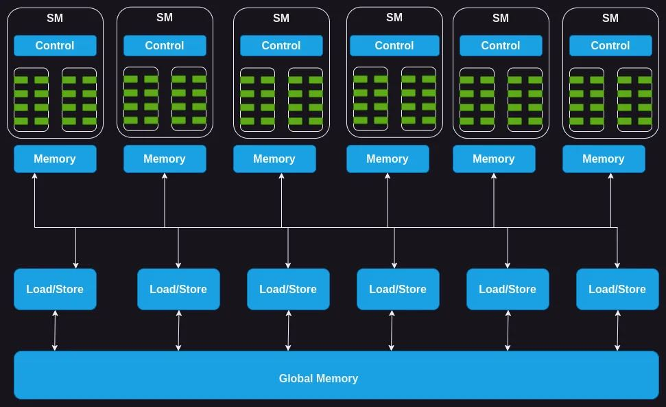
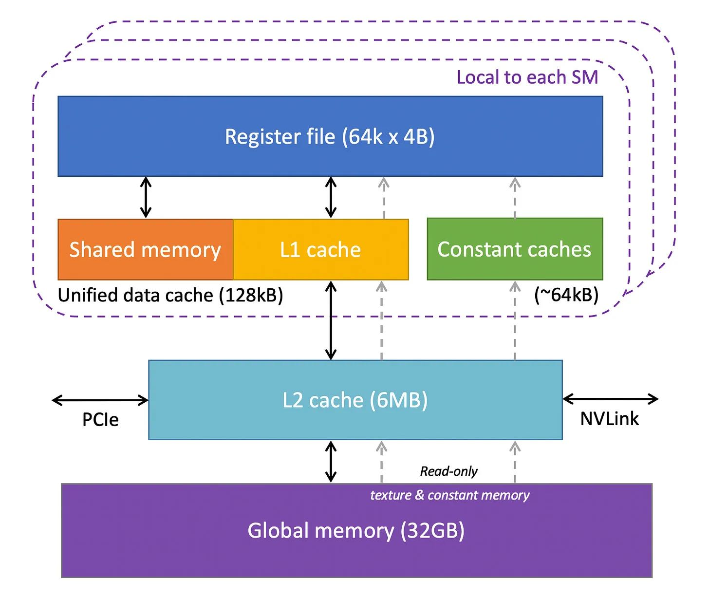
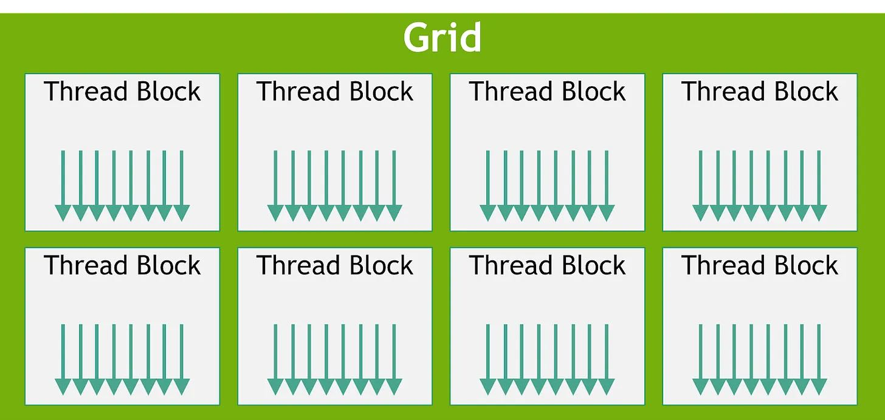
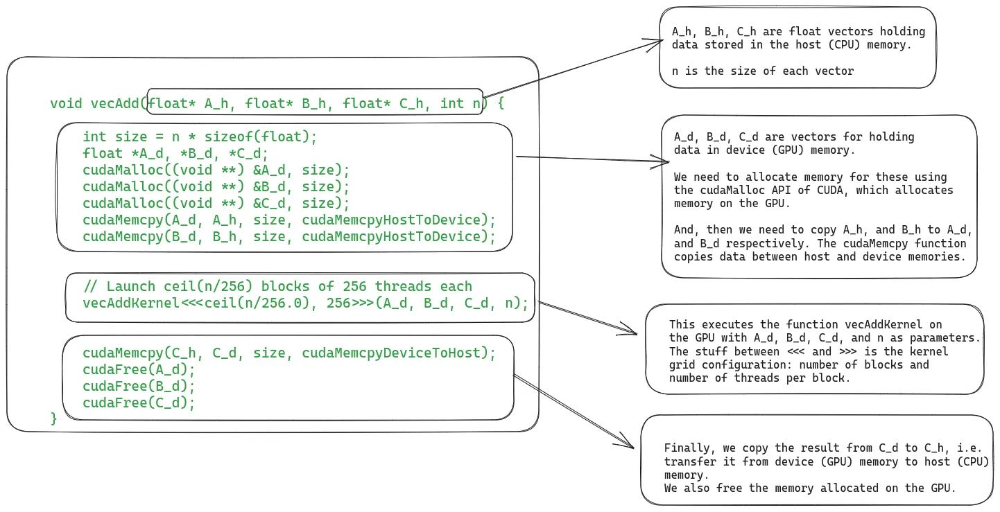

What Every Developer Should Know About GPU Computing
What Every Developer Should Know About GPU Computing
GPU计算的科普文章
1. 计算架构
H100芯片有132SM，每个SM有64cores. 后面提到每个SM最多可以执行32blocks, 64warps(32 threads), 每个block最多执行1024threads.
A GPU consists of an array of streaming multiprocessors (SM). Each of these SMs in turn consists of several streaming processors or cores or threads. For instance, the Nvidia H100 GPU has 132 SMs with 64 cores per SM, totalling a whopping 8448 cores.
Each SM has a limited amount of on-chip memory, often referred to as shared memory or a scratchpad, which is shared among all the cores. Likewise, the control unit resources on the SM are shared by all the cores. Additionally, each SM is equipped with hardware-based thread schedulers for executing threads.
Apart from these, each SM also has several functional units or other accelerated compute units such as tensor cores, or ray tracing units to serve specific compute demands of the workload that the GPU caters to
其实下面这个memory似乎有点不太准确，下节会有更详细的说明。可以看到SM都是独立的，共享一个control, 完了里面有许多执行单元。

2. 内存架构
H100有64K个寄存器, constant cache可以在代码里面声明常量加载进来，shared memory有点类似全局变量的感觉，多个thread是可以共享一份。L1 Cache/L2 Cache/Global Memory这个和CPU有点类似了。
- Registers: We will start with the registers. Each SM in the GPU has a large number of registers. For instance, the Nvidia A100, and H100 models have 65,536 registers per SM. These registers are shared between the cores, and are allocated to them dynamically depending on the requirement of the threads. During execution the registers allocated to a thread are private to it, i.e., other threads cannot read/write those registers.
- Constant Caches: Next, we have constant caches on the chip. These are used to cache constant data used by the code executing on the SM. To utilize these caches, programmers have to explicitly declare objects as constants in the code so that the GPU may cache and keep them in the constant cache.
- Shared Memory: Each SM also has a shared memory or scratchpad which is a small amount of fast and low latency on-chip programmable SRAM memory. It is designed to be shared by a block of threads running on the SM. The idea behind shared memory is that if multiple threads need to work with the same piece of data, only one of them should load it from the global memory, while others will share it. Careful usage of shared memory can cut down redundant load operations from global memory, and improve the kernel execution performance. Another usage of the shared memory is as a synchronization mechanism between threads executing within a block.
- L1 Cache: Each SM also has an L1 cache which can cache frequently accessed data from L2 cache.
- L2 Cache: There is an L2 cache which is shared by all SMs. It caches the frequently accessed data from the global memory to cut down the latency. Note that both L1 and L2 caches are transparent to the SM, i.e., the SM doesn’t know it is getting data from L1 or L2. As far as the SM is concerned, it is getting data from the global memory. This is similar to how L1/L2/L3 caches work in CPUs.
- Global Memory: The GPU also has an off-chip global memory, which is a high capacity and high bandwidth DRAM. For instance, the Nvidia H100 has 80 GB high bandwidth memory (HBM) with bandwidth of 3000 GB/second. Due to being far away from the SMs, the latency of global memory is quite high. However, the several additional layers of on-chip memories, and high number of compute units help hide this latency.

3. 静态结构
代码结构上有Grid/Thread Block两个概念，每个block里面有许多threads. block/threads这两个概念在SM执行结构中也会被用到。编写kernel的时候需要指定block size和block number.

可以看到在下面调用vecAddKernel的时候，每个block有256个threads, 有ceil(N/256)个blocks. 我暂时也不知道怎么进行平衡比较好。

4. 执行过程
执行代码和数据都需要从CPU memory拷贝到GPU memory上，GPU计算完成之后然后重新拷贝到CPU上，现在可能也要有一些技术来避免内存拷贝。
几个对应关系：
- 一个thread block只能被一个SM执行，一个SM可以执行多个blocks. 但是一个SM执行blocks数量有上限比如32个。
- 一个block里面有N个threads 但是这些threads并不是被一起执行的，而是打包成为warp(弯曲?).
- 一个warp是32个threads. 所以如果是256个threads的话，那么被打包成为8个warps.
- 一个warp可以认为是一个最小执行单元，必须等待warp都结束了才认为结束。如果warp执行时间比较长，中间也可以切换出去。但是切换代价非常小。
Even if all the processing blocks (groups of cores) within an SM are handling warps, only a few of them are actively executing instructions at any given moment. This happens because there are a limited number of execution units available in the SM.
But some instructions take longer to complete, causing a warp to wait for the result. In such cases, the SM puts that waiting warp to sleep and starts executing another warp that doesn't need to wait for anything. This enables the GPUs to maximally utilize all the available compute and deliver high throughput.
Zero-overhead Scheduling: As each thread in each warp has its own set of registers, there is no overhead for the SM to switch from executing one warp to another.
This is in contrast to how context-switching between processes happens on the CPU. If a process is waiting for a long running operation, the CPU schedules another process on that core in the meanwhile. However, context switching in CPU is expensive because the CPU needs to save the registers into main memory, and restore the state of the other process.
最后就是执行效率，在里面叫做occupancy. 可以认为当前有多少个warps在执行吧。occupancy有许多因素进行限制，一个SM最对执行
- 32 blocks
- 64 warps
- 1024 threads(32 warps) per block
- 64K registers
So, why can't we always reach 100% occupancy? The SM has a fixed set of execution resources, including registers, shared memory, thread block slots, and thread slots. These resources are dynamically divided among threads based on their requirements and the GPU's limits. For example, on the Nvidia H100, each SM can handle 32 blocks, 64 warps (i.e., 2048 threads), and 1024 threads per block. If we launch a grid with a block size of 1024 threads, the GPU will split the 2048 available thread slots into 2 blocks.
Now, let's look at an example to see how resource allocation can affect the occupancy of an SM. If we use a block size of 32 threads and need a total of 2048 threads, we'll have 64 of these blocks. However, each SM can only handle 32 blocks at once. So, even though the SM can run 2048 threads, it will only be running 1024 threads at a time, resulting in a 50% occupancy rate.
Similarly, each SM has 65536 registers. To execute 2048 threads simultaneously, each thread can have a maximum of 32 registers (65536/2048 = 32). If a kernel needs 64 registers per thread, we can only run 1024 threads per SM, again resulting in 50% occupancy.